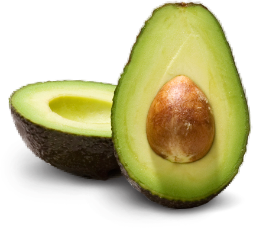
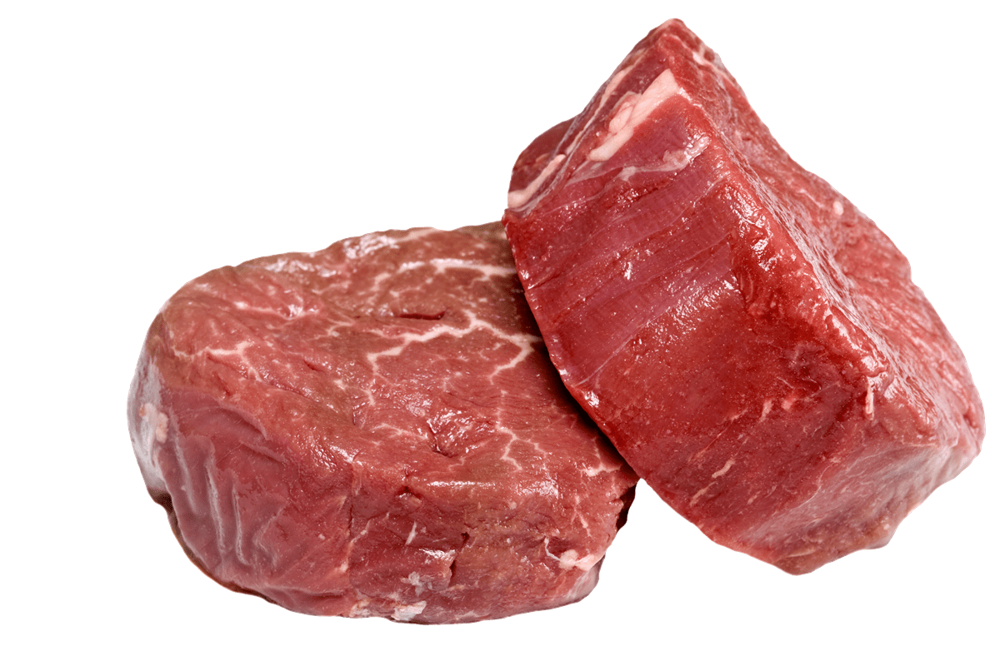
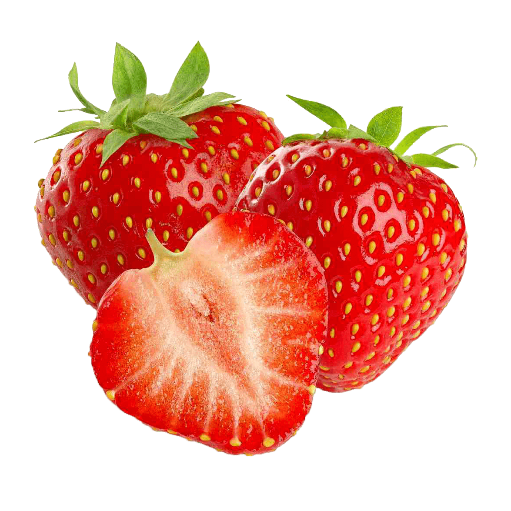
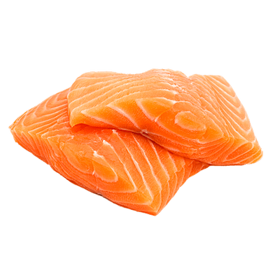
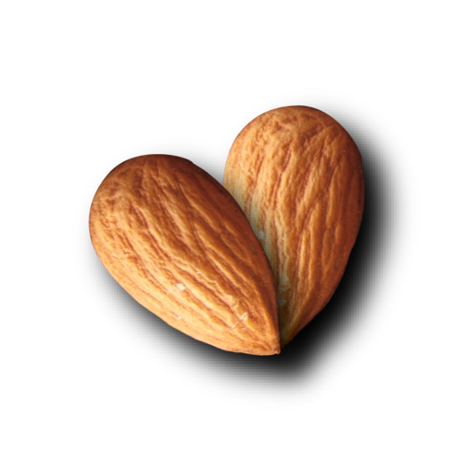
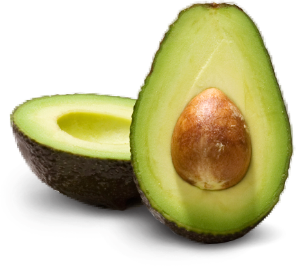
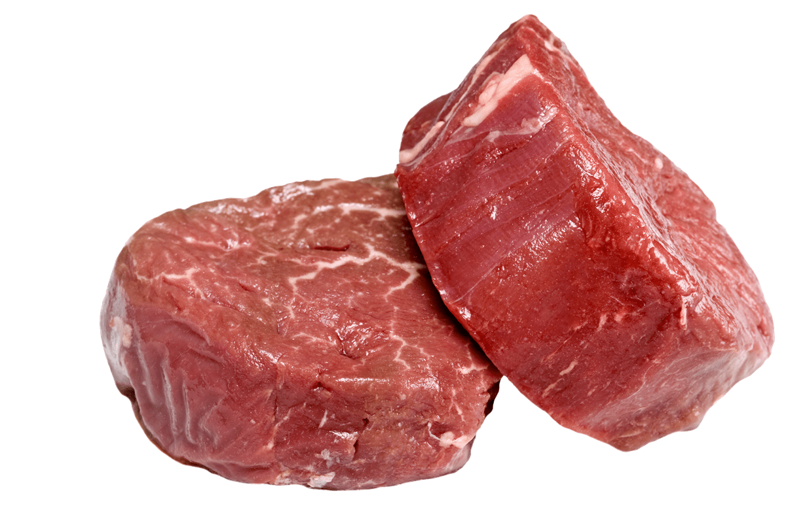
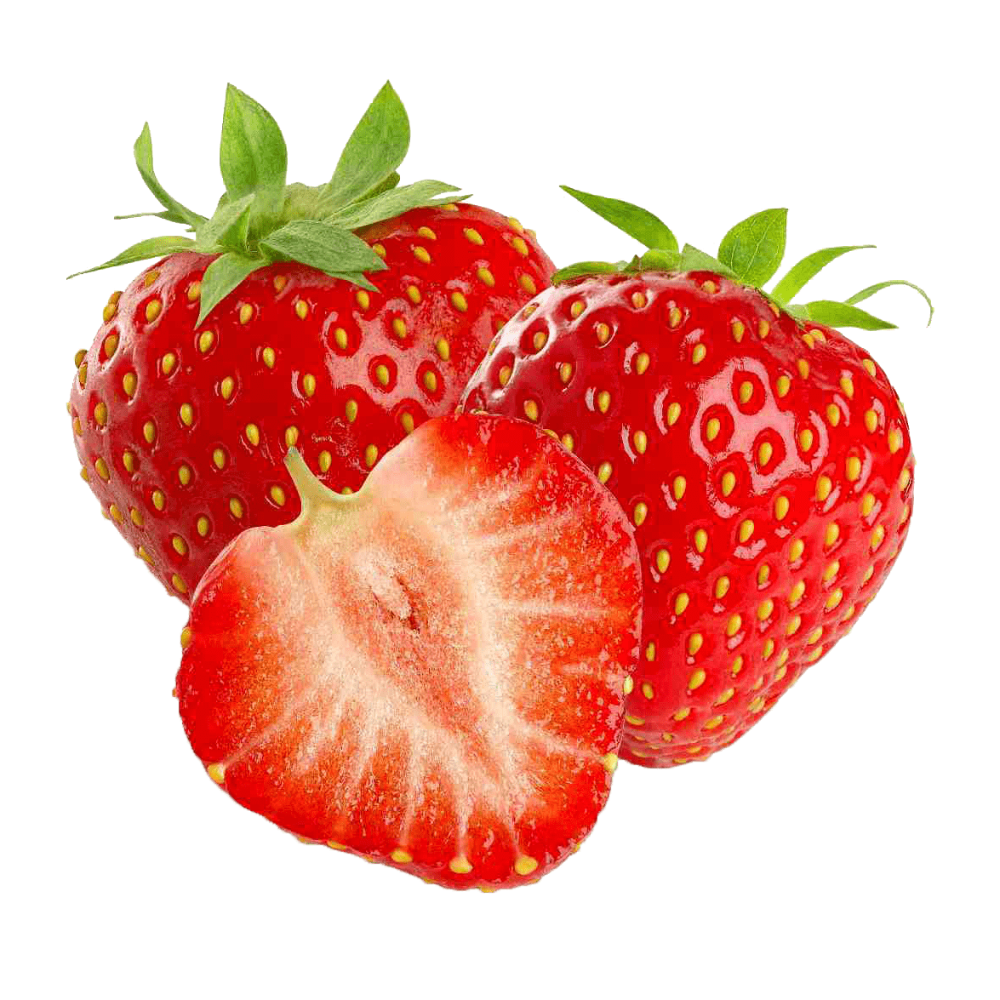
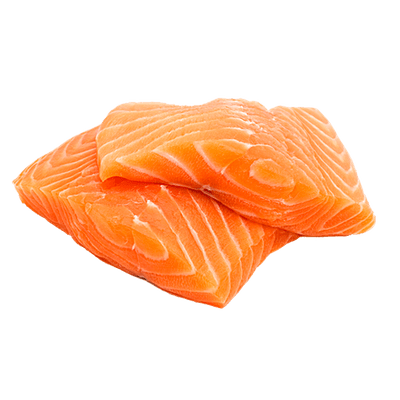
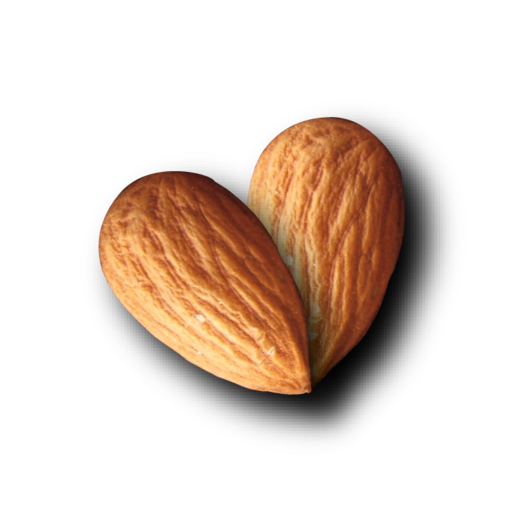

Vitamins
Vitamin A
Vitamin B6
Vitamin B9
Vitamin B12
Vitamin C
Vitamin D
Vitamin E
Vitamin K
In humans there are 13 vitamins: 4 fat-soluble (A, D, E, and K) and 9 water-soluble (8 B vitamins and vitamin C). Vitamins have diverse biochemical functions. Some, have hormone-like functions as regulators of mineral metabolism, or regulators of cell and tissue growth and differentiation, while others function as antioxidants.
Vitamin A is a fat soluble vitamin that is also a powerful antioxidant. It helps in increasing the body’s immunity to fight infections and keeps your eyes and skin moist. Liver, carrots and sweet potatoes are the richest sources of Vitamin A.
Vitamin B6, also called pyridoxine, is one of 8 B vitamins. It is important for protein metabolism, growth and carbohydrate utilization. Vitamin B6 can be found in turkey, beef and avocado.
Vitamin B9, also called folic acid, is one of 8 B vitamins. Folic acid helps the body make and maintain new healthy cells. It is also necessary for synthesis of DNA and for preventing changes to DNA. Vitamin B9 can be found in beans, spinach and broccoli.
Vitamin B12, also called cyanocobalamin, is one of the 8 B vitamins. It is important for the maintenance of nerve tissue and is essential for the metabolism of fats and carbohydrates, energy metabolism and cell regeneration. Vitamin B12 is found only in meat products such as beef, poultry and eggs.
Vitamin C is important for our muscles, and we need it to function properly. Vitamin C is required for collagen and elastin synthesis. Also, it is responsible for the health of the blood vessels, which support the muscles' needs for oxygen and nutrients. Bell peppers, kiwi and strawberries are among the highest sources of vitamin C.
Vitamin D has numerous health benefits, from keeping our bones and teeth healthy to potentially even protecting against diseases such as diabetes and certain types of cancer. A new study suggests that vitamin D may also improve muscle strength. Salmon, eggs and milk are some of the richest sources of vitamin D.
Vitamin E is a fat-soluble vitamin and is an antioxidant. Its antioxidant properties aid with muscle repair by removing destructive by-products from the body. Increasing Vitamin E intake may have a positive effect on people suffering from muscle soreness. Almonds, spinach and kale are the richest sources of vitamin E.
Vitamin K is a vitamin that is fat-soluble. It is an essential cog in the functioning of several proteins involved in the blood clotting, cell growth, and bone mineralization processes. The richest sources of vitamin K are kale, natto and spring onions.
 








